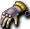
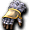
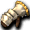

Lv1～20
邊做初心者任務邊提升等級吧。
Lv1～5在斯歐米森1打「波恩」比較好，但一用魔法MP馬上就沒了。
所以一開始拿木刀毆打比較輕鬆，即使如此還是要使用魔法的話，就帶瑪娜莉洛等MP回復藥水吧。
順帶一提，「土耳其石」10個是取得幽靈之眼所需要的，所以不要丟掉，留著。
這個時期也可以在盧亞斯森2的小烏鵝等處賺。
用小烏鵝提升等級時，要去市場購買盧亞斯傳送門，
因為不會反擊，所以到Lv11為止特別不用買防具（只靠小烏鵝升級的情況）。
在可以裝備Lv5的土壤法球之前，建議裝備木刀。
初期裝備的法球賣掉也沒關係。
到Lv5就買土壤法球(INT3)裝備，以魔法攻擊為主。
魔術師如果勳章和魔法的屬性不一致就無法打出最大傷害，
所以從一開始就要有意識。
打算轉職吟遊詩人的人，這個時期忍耐不用魔法攻擊，先提升攻擊技能的話，
轉職後有一陣子會用攻擊技能，所以會輕鬆。
攻擊技能在角色等級提升之後就很難練。
Lv6～10繼續在森1打「波恩傑奇」，
或往上去打庫那・奈德帕姆，或往右去打胸甲波恩也可以。
跟小烏鵝的任務同時進行的話，應該不用為藥水錢煩惱。
資金一有餘裕，就買商店賣的鎖鏈戒指4個來裝備。
如果已經從胸甲波恩拿到E可（＝可附魔：橘色文字的裝備）鎖鏈戒指，
只要補剩下的欄位就可以了。
Lv16～20主要裝備土勳章打「胸甲波恩」。
如果到這裡的裝備都齊了，2發必殺，很好打。
胸甲波恩會掉E可鎖鏈戒指，
所以如果裝備的是商店賣的鎖鏈，就換成這邊的。
Lv18～左右起，也可以在森4用風刃+風勳章打庫那和阿英。
庫那和奈德帕姆會給名聲值，有助於裝備羽毛帽。
順便還能瞄準庫那・阿英掉E可風之戒指，稍微賺一點資金。
不過奈德帕姆會使用混亂魔法(遠距離)，所以要逃跑或迅速打倒。
※給攻擊時在意MISS的人
用裝備補正提升WIS看看。
注意：升級時的能力值不要分配到WIS。
如果確殺不會崩壞，即使降低INT也確保WIS，命中率會感覺有提升。
Lv21～30
資金一有餘裕，就從法球畢業，
使用依破邪、破邪、古代、古代、破邪順序附魔的木刀就好。
因為也能裝備盾牌，所以攻擊力、AC都很穩定。
不是木刀，有INT或DAM附魔的單手劍的話也用那個。
Lv31可以裝備可附魔盾的萊德，
所以希望在那之前準備好。
初心者任務結束後，繼續在斯歐米森4
瞄準風之戒指打庫那或阿英就好。
瞄準庫那的理由是風刃可以一擊打倒。
膩了的話，狩獵魯克西翁D1的猴子也不錯。
(推薦使用水屬性。雖然冰球相當昂貴。)
會掉很多守護任務大量使用的香蕉，所以可以賺點小錢。
因為隨時都有需求，另外做一個倉庫角色，囤積起來
比較好。之後自己養守護時也能用。
而且紅猴子會掉戰士技能呼籲。
以相當高的價格交易，努力掉出來也不錯。
另外，做脫離初心者裝備1～4的任務也不錯。
獎勵雖然普通，但額外拿到的鞋子皮製長靴，
因為能以鞋子部位的裝備提升魔法師所需要的INT和WIS
能力值，所以相當好用。
以經驗值為目的的話，學會範圍魔法後，夢見之塔的1F～2F左右
推薦。HT時一隻能拿到1000以上。特別是1F樓梯附近
會大量湧出。注意躲在地形陰影處的敵人，同時利用地形
只引導適量來打，或用範圍削血再用單體魔法收尾等，
要下點功夫。不過掉落品不能期待太好。
想更貪心地賺經驗值的話，就大量帶MP藥水，
在米魯里斯森3打[涅克洛凱斯塔]，或在斯歐米森3打泰茲魔。
雖然找起來很辛苦，但要邊逃避不被接近邊發射魔法。
兩個森林都很大，所以逃跑應該不難。
1隻10000(HT時15000)。
Lv21可以學會「附魔武器」。
對INT魔來說關係不大的技能，但學起來比較好。
※基本上是拳擊魔的主力技能。
Lv22的「單體電擊」對INT魔來說是普通的技能。
視打法而定，諾肯・迪斯系的雜魚或夢見之塔1F等級的話
有用。
因為相對於消耗MP威力會變得非常低，所以就當作WIS魔用的吧。
Lv24的「火焰小箭」因為掉落少所以莫名地貴，但相對的必要性很低。
這個時期沒有打風屬性的機會，所以跳過也可以。
Lv26的「冰槍術」學起來比較好。
在魔窟10打皮塔時有效。
消耗MP、攻擊力與詠唱動作的平衡良好，後期也常使用。
也能用在之後學的「大火焰爆裂」的連擊(服用快速藥水的前提下，
冰槍術→大火焰爆裂，互補各魔法缺點的連擊)。
皮塔使用直通電梯2F就能馬上到，所以補給也輕鬆。
這裡掉的皮塔工人，裝備後移動速度上升10％。
可以賣得相當高價，所以適合前期賺資金。
可以只上古代裝備、挑戰附魔、賣給別人等，用途廣泛。
Lv51以後可以裝備，所以留一個吧。
另外，在雷德吉亞帽子上用古代→詛咒加AC的話會稍微硬一點。
不過被包圍會死，所以也帶20個左右的HP藥水。
跟2隻以上接觸時的回復，差不多該養成連打HP藥水來回復的習慣了。
學會Lv28的「雷球術」後，裝備風勳章、土腰帶，去魔窟28
50地獄前所有敵人都能一發打倒，所以能順利練功。
不過沒有記憶之書的話往返可能很吃力。
每次2萬Glod的1F電梯可以去的魔界村地下城的幽靈鬼箱也推薦。
※記憶之書在這個等級帶可能很難取得(特別是1st角色)。
個人認為斯歐米森4＞魔窟10＞魔窟28
Lv31～50
30的「大範圍流沙術」可以用來一掃雜魚，學起來也不錯。
另外「全體瞬間移動自身」由諾肯突襲掉落。
很方便，一定要學會。
收集媒介最適合盧亞斯森的小烏鵝。地圖明明很窄，卻有縮小前的量刷新，所以有很多。
斯歐米的庫那、阿英已經不是對手。
阿英也在INT70～後，一發冰球就能打倒。
此外，這個等級帶可以學會PT中必備的基本輔助魔法。
Lv35「詛咒防禦」→完全單人一生的話不需要，但只要有打算加入PT一次就絕對需要。
Lv40「詛咒防護」→單人也會降低對方的魔法防禦力，所以必備。
Lv41「凍結流血」→可作為防身用，而且對任何對手都必定命中，連打可以封鎖敵人的特殊能力，
也可以用。也有與攻擊魔法交替使用的做法。
Lv50「最後之刃」→受到傷害減半，所以單人還是PT都必備。只有這個商店沒賣，
一定要拿到手。
確實派→魔界村地下城1
賺錢派→繼續在斯歐米森4籌資金。
效率派→魔窟10(2F)・16(3F)・18、任務「艾德領主的地下挖掘」、「昔日英雄的遺產」
其他推薦→魔窟20
任務「艾德領主的地下挖掘」留下1隻怪物後用傳送門逃走比較好
任務「昔日英雄的遺產」為了不完成，不可點擊英雄之墓
魔窟10・16怪物很多，滿容易死的，要注意。
皮塔工人可以賣，但與魔的相性很好，所以留一個也不錯。
魔窟20雖然移動花時間，
但可以拿到在危機時或移動時能在地圖內隨機移動的隨機傳送，
以及比其他戒指AC高1的佩特戒指
如果WEI吃緊，雖然稍微貴一點，買守護動物也不錯。
守護即使Lv1，WEI也有42，所以讓守護拿藥水的話可以多帶相當於35個重量的藥水。
(守護卵的重量是7，課金守護卵的重量是0。)
資金有餘裕的話，也可以把忘卻的艾奇拉法球(在伊卡魯斯購買)附魔來做武器。
理想是INT+WIS達到10以上。順利的話會成為能用到Lv60的武器。
不過死亡會消失，所以做1、2個備用比較好。
如果能調度到INT或DAM有OP附魔的武器就更好。
逛露天攤位，偶爾會有對超越Lv50有幫助的OP附魔武器被賤價出售，
買這些的話，Lv50會比較容易輕鬆超越。
偶爾也會看到INT、DAM、WIS附魔的匕首或法球，好到能用到Lv75。
Lv51～70
皮塔鞋可以裝備了。
有記憶之書的話，繼續在魔窟28或29練比較好。
想瞄準爆裂波和全體瞬間移動的掉落的話選29。
29要注意火焰飛龍。
看到的話立刻用隨機傳送逃走吧。
學會風刃術和火焰爆裂後，
裝備風勳章、土腰帶，在魔界村地下城9打麥尼亞克。
使用直通電梯3F就能馬上到，所以補給輕鬆很好。
這裡掉的麥尼亞克手套也能賣高價，適合中期賺資金。
附魔後會變得能賣更高價，所以挑戰看看也不錯。
到了這個等級帶，魔術師可以使用之後也經常使用的以下技能。
Lv55・・・冰旋術(水屬性攻擊)
Lv60・・・風刃術(風屬性攻擊)
Lv60・・・屬性賦予(將對象1隻怪物的防禦屬性變更為所裝備勳章的屬性)
Lv60・・・冰結之槍(水屬性攻擊，附加效果為緩速效果）
冰旋術・風刃術・火焰爆裂這3個
是魔術師的主力技能，所以一定要學會。
另外，屬性賦予雖然貴，但學會後練功會有更多變化，特別是PT很受重視。
之後想在天上練功時也相當有用，所以學起來比較好。
學會這些技能・魔法，終於能躋身一流魔術師之列。
Lv60的冰結之槍威力非常高，沒有冰旋術或風刃術那樣的詠唱。
而且有時還會附魔緩速效果，所以也能抑制被接近的可能性。
CT3秒且消耗意外地重，所以不能亂射，但總之很強力。雖然價格稍高，但值得入手。
Lv65的火焰之盾雖然有點怪，但是善惡決定前唯一的暗黑屬性必中魔法。
單人被接近時，或PT中位於包圍敵人的前衛正後方等，狀況
配合得好的話意外地強力，所以學起來比較好。
在伊卡魯斯城鎮周邊可以單人練功了。
PT練功是德羅或火山1，但如果不會屬性賦予・最後之刃・詛咒的話
會很沒面子，所以請盡早備齊。
另外，在伊卡魯斯城鎮找去火山的PT一起練也不錯。
不過，以魔術師的特性，目前PT練功的機會比其他職業少。
自然而然會變成很多人單人練，但相對地魔術師有
在各種練功場都容易單人練功的特點。
關於其他單人練功場，有以下選項。
＜魔界村地下城4＞
・以幽靈鬼箱為主，用風屬性魔法打。也會出紅色或金色寶箱，所以資金也能賺不少。
・會做土屬性攻擊，所以裝備戴姆萊特等土屬性腰帶去吧。
・刷新時可能因延遲而死，所以特別注意保持距離攻擊。
・可以賺經驗值，但名聲經驗值幾乎等於0。
＜魔界村地下城9＞※給有自信的人・想要刺激的人。
・用風屬性魔法打麥尼亞克，用火屬性魔法等打星星。這裡會出寶箱（金）。
・會做土屬性攻擊，所以裝備戴姆萊特・鑽石重皮帶等土屬性腰帶去吧。
・特別是麥尼亞克的攻擊很痛，而且移動速度・攻擊速度快，所以最好先習慣4樓・幽靈鬼箱的練功
再去。麥尼亞克掉的麥尼亞克手套能賣高價，所以也適合賺資金。
・可以賺經驗值，但名聲經驗值幾乎等於0。考慮到會死的話，名聲會變負。
＜魔窟28,29＞※已學會隨機傳送或有記憶之書的人比較輕鬆。
・遠距離攻擊很痛，所以裝備重視MC的裝備和杜魯伊達卡伊塔去吧。
特別是29樓會出現火焰飛龍(黑色的蒂拉諾)，但絕對不可以招惹。
看到的話要迅速逃走。
・防禦土屬性的敵人多，所以用風屬性魔法打比較好。
・也會出寶箱（金），所以也適合初期賺資金。
出了防護盾牌的話請留一個。是後衛可裝備的MC盾，之後會有派上用場的場面。
＜裏格列佛區4＞
・以切斯曼為中心打。他們會施放混亂，所以別忘了在卡雷瓦拉取得鎮定劑。
・這裡會掉「胡桃夾子票券」，賣掉也能賺資金。
・敵人攻擊力和HP高，所以要注意不被近身，施放詛咒防護後
以打帶跑攻擊來打倒。
・這裡的敵人防禦屬性隨機，所以有屬性賦予的話，賦予→詛咒
然後打倒會比較輕鬆。
＜阿德里本6F～7F＞※這個等級帶基本上是給第二個角色以後。需要一定程度的裝備和走位射擊的練習
・隨機屬性且攻擊痛得離譜，所以羅達機械是必備。沒有的話會被一擊秒殺。
(打個比方，就是耐久偏低的死亡冠軍米爾以麥尼亞克的速度靠近過來那種程度。)
・瑪娜莉克夏的消耗嚴重，所以守護也是必備。把霍布里克帶回去修剪的話賺錢相當多。
・打馬凱拉。絕對不要碰冰塊。
・防禦屬性隨機且HP偏高，所以需要切換魔法和勳章。
「勳章更換⇒賦予⇒勳章更換⇒火焰爆裂⇒大火焰爆裂」或
「勳章更換⇒賦予⇒勳章更換⇒風刃術⇒颶風刃」會是主力。
能確實打倒的組合視INT而定，所以這終究只是一例。
※不過，現在也許是因為伺服器防掛機對策，更換裝備前似乎需要一定的時間（1秒左右）。
所以，如果照一般的勳章更換⇒賦予⇒勳章更換這樣做，第二次的勳章更換
可能無法進行。
因此，要事先戴好想賦予的屬性的勳章，採賦予⇒勳章更換，
或像勳章更換⇒賦予⇒詛咒⇒勳章更換這樣中間夾輔助，
或像勳章更換⇒風刃術等(有詠唱的魔法)⇒賦予⇒勳章更換⇒（魔法發動）這樣
設法在第一次與第二次更換之間留出空檔比較好。
・重量有問題，但有冬季對抗者的話狩獵會稍微輕鬆。
(因為祈禱動作變成攻擊動作)
資金上已經能隨時使用高速藥水了，所以不管去哪個練功場，常備的話死亡率會大幅下降。
※除此之外可能還有不錯的練功場。問問認識的人或朋友也不錯。
Lv70～85(主要記述參加火山PT的部分)
Lv80可以學會魔術師緩速。
效果與吟遊詩人的緩速民謠舞相同，但吟遊詩人的緩速效果時間比較長。
不過，PT中吟遊詩人通常更忙，而且吟遊詩人緩速的連打速度比魔差，
所以一般由魔來施放緩速的情況較多。
不清楚的話，跟主辦人或隊員商量比較好。
是PT中最想先施放的輔助，單人也會非常照顧你。
70＆79＆85地獄期間參加火山PT可以快點脫離。
到85為止靠打戒指也能脫離。
單人因延遲而變墓的機率高這點依舊，
所以只在快脫離前等時候加入PT比較好。
INT裝備備齊到一定程度或資金有餘裕的話，
比起搭火山PT，購買阿德里本傳送門單人冰6F(通稱馬凱拉Online)脫離地獄有時更快。
(能獲得的經驗比火山2多得多，但不習慣的話死亡頻率相當高。)
對單人多的INT魔術師來說，是少數能參加大PT的機會，所以務必趁這個機會習慣。
最近必須組PT的練功場也增加了，所以為了想去那種練功場時，要學會PT中的行為舉止。
喜歡單人、PT招募時間不合等的人，請參考下面的單人練功場。
不過難得是MMORPG卻不組PT太可惜，建議至少參加一次。
PT招募在F2佈告欄或伊卡魯斯城鎮等進行。
打算轉職吟遊詩人的人，差不多該準備轉職後的裝備・魔法・資金了。
(特別是音樂控制和音爆很貴，所以趁魔術師時)
在魔時準備與否，轉職後的成長情況會有天壤之別。
在PT中的角色被要求屬性賦予與戰鬥輔助。
除了魔PT等，基本上不打攻擊魔法(特別是範圍)。
需要的魔法有屬性賦予、詛咒防禦、 最後之刃、凍結流血，
最後之刃、凍結流血，
等級夠的話（附帶購買費用與MP消耗都很高）魔術師緩速、最後護甲。
沒有騎士或詩人的話就是擊中打擊。
對敵人使用的魔法優先順序在這個等級帶是緩速・最後之刃→詛咒防禦or屬性賦予→最後護甲
為了讓屬性賦予命中所需要的WIS，在火山的話20左右就夠了。
有會使用混亂的敵人，所以別忘了帶鎮定劑。
火山1的賦予是風。(魔術師裝備風勳章，前衛裝備火勳章。)
 對蒂拉諾、死亡系，有餘裕的話對除了風防禦屬性的豬以外的敵人賦予風。
對蒂拉諾、死亡系，有餘裕的話對除了風防禦屬性的豬以外的敵人賦予風。
火山2的賦予是火。(魔術師裝備火勳章，前衛裝備水勳章。)
對蒂拉諾、死亡系賦予火。其他敵人不用賦予。
有餘裕的話，用凍結流血讓敵人停止動作，讓前衛容易攻擊也不錯。
火山的裝備比起MP・INT更重視HP･AC・AAR。
更進一步說，HP・AC＞WIS(到賦予必中的程度)＞AAR＞＞＞＞MP・INT的裝備是最好的。
請準備百鬼王冠、 線圈耳環、食人魔護手(弟子服是×)等。
線圈耳環、食人魔護手(弟子服是×)等。
腰帶是羅達或機械。沒有的話，火山1時風或土腰帶，火山2用火腰帶就好。
推薦裝備請參考本項目下方
定點練功(守株待兔or拉怪練功＝組陣形，主要由前衛把敵人帶來)的情況
盡量不要離開事先決定的位置。
即使是移動練功，也希望盡量不被敵人繞到背後，
站在我方前衛或聖職者旁邊的位置。
即使被敵人鎖定，我方前衛應該會馬上奪回仇恨，
所以盡量不要到處逃跑比較好。
萬一前衛不在附近時被鎖定（打得倒的敵人還好，打不倒的強敵）
連打凍結流血，在避免從敵人受到傷害的同時等待救援比較好。
即便如此還是遇到不肯拉仇恨的前衛的話……對敵人施放最後之刃後
逃到前衛所在的地方也是一招（逃到那邊後用赫爾莉克夏＆凍結流血撐住）。
敵人在鎖定我們期間會面向我們，所以前衛的第一擊一定能
從側面或背面攻擊。不過，蒂拉諾(t)的遠距離攻擊比直接攻擊還痛，大約400傷害，而且因為「經驗很好吃」，
前衛一定會來打，所以留在原地等比較好。
※千萬不要一邊用自我治癒等一邊逃到離前衛遠的地方。
因為前衛會被迫追過來打敵人。
※治療不一定會一直飛來(因為前衛優先)，為了自保，
帶一些回復量較多的HP回復劑比較好。魔不要指望聖職者的回復。
對敵人施放最後之刃，進入聖職者的回復範圍，或一邊吃赫爾莉克夏一邊面向正面稍微忍耐吧。
特別是t的遠距離攻擊對HP偏少的INT魔很危險，帶著仇恨到處亂逃會讓變墓機率上升。
如果自己在離聖職者或前衛很遠的地方被鎖定，一直留在原地被打很危險，
所以一邊吃赫爾莉克夏一邊靠近聖職者或前衛其中之一比較好。
如果要在原地忍耐，一定要施放最後之刃，面向敵人正面用凍結流血等等待隊友支援。
火山2敵人攻擊力整體很高，所以裝備和狀況不好的話可能會被一擊秒殺……不過，
這也在風險之內，變成那樣時就乾脆放棄吧。
為了不被鎖定，不要隨便攻擊，用凍結流血讓動作停止比較好。
(給有餘裕的猛者魔……一邊看周圍一邊啄擊可確殺的敵人也很有趣。)
敵人突然出現導致前衛拉仇恨慢了、後衛被盯上而前衛沒發現的情況等，
用攻擊魔法拿仇恨當然對裝備齊全的魔來說也許可以，
但如果用能停止敵人攻擊的凍結流血，
敵人的顏色會改變，容易向前衛表示後衛的狀況，所以活用看看不是很好嗎。
就吸引目標這個意義來說，魔法很好用。
但是，初心者往往沒有足以確實處理的攻擊力，
所以操作有餘力、想玩玩看的時候可以試試。
不過，這是非常危險的行為，所以純屬自己負責……。
施放攻擊魔法時，一定要貼近前衛，對前衛正在打的敵人使用。
隨便在遠處施放魔法，前衛正在打的敵人可能會移動，要注意。
從遠處施放時，除非是要把前衛叫過來等用途，否則敵人一開始移動就立刻凍結流血。
前衛容易只看眼前的敵人，所以累積經驗有餘裕之後，
可以在輔助後運用凍結流血牽制聖・吟的仇恨目標，對總是在遠離大本營處
打的前衛的敵人施放攻擊魔法把前衛叫回大本營等，也能控制戰況。
不過即使如此基本上仍以輔助優先。
與吟遊詩人組隊，MP偏少的INT魔會發現增加魔力(通稱：增魔)的可貴，
但以增加魔力為首的增加系，有以吟遊詩人為中心的5×5這個
限制。也就是說，只能到達吟遊詩人縱橫斜向相鄰的格子，或再往外1格的格子。
↓增加系的效果範圍
作為吟遊詩人，其實想優先照顧更耗MP、且負責PT穩定的聖職者（吟遊詩人不工作的話1小時
聖職者的瑪娜莉克夏100個就會飛光）。
想要增加魔力的話就要靠近吟遊詩人(持有仇恨時除外)。
[推薦練功場]
單人練功場：格列佛、胡桃、冰之城6F等
PT練功場：火山1、火山2等
[火山PT時的推薦裝備]
重視HP・AC的裝備…
◎百鬼王冠or后冠
◎E可雨耳環、線圈耳環
◎各LvE可服
○各Lv普通服
◎E可萊德・單色盾
◎食人魔鳶盾
◎黃金鞋、E可鞋
◎食人魔護手
○HP附魔木刀(ELv4以後詛咒來做。看努力程度，HP30～50左右都在射程範圍內。)
※可附魔的東西全部都附上古代捲軸×4(服裝、盾牌再加甲殼捲軸×1)的附魔吧。
※裝備法球就不能裝備盾牌，從確保AC的角度來看法球完全不利，所以特別是在火山，
除非是裝備相當齊全的魔，否則盾牌是必備。用上述HP附魔木刀去吧。
※上述裝備中，單色盾、巫師耳環等對初心者可能難以取得，
但其他的取得難度相對較低。
※請盡量確保上述重視HP・AC的裝備的高HP・AC。
＜關於馬凱拉Online＞
・Lv71以後，透過巫師耳環和無詠唱魔法(颶風刃、大火焰爆裂)等，火力大幅強化，單人效率也大幅提升。
・風刃術→颶風刃→勳章切換大火焰爆裂的連擊相當強力。今後在天上和馬凱拉都是必備，所以先習慣快速的勳章切換吧。因為已經能使用無詠唱魔法，比起看屬性，硬幹反而更快。
・基本上馬凱拉不需要命中，所以通常會用極限火力裝備，但一瞬間的延遲就可能死，所以不習慣的時候有時穿防禦裝備比較好。那種情況下，盡量避開盾牌、雨耳環、線圈耳環這種火力大幅下降的裝備，把百鬼王冠或食人魔鳶盾等盡量不會讓火力下降的部位拿去防禦比較好。
有高性能OP附魔的卡奇哈普恩或DAM＆INT附魔木刀的話，有時拿盾牌比較好。
・如果出現了幽靈弗里克爾或艾米斯、聚集太多敵人應付不來這種緊急狀況，
建議登出3分鐘左右（向幽靈弗里克爾挑釁是自殺行為）。
Lv86～90
終於可以學會高階施放。
可說是INT魔最大瓶頸的MP問題，到這裡終於稍微改善。
Lv90使用國王之心可學會的狀態分析，
很可惜沒有特別的用途。
依WIS和INT的量，成功率和能看到的狀態限制會改變。
可以用於MC4打國王微笑時確認剩餘HP等。
這個等級帶單人練功場的代表有以下這些地方。(以1st魔能實現的裝備為基準介紹。)
・艾莉絲3(目標是INT戒指。DAM15水勳章＋魔王法球＋INT105多：冰旋)
・魔界村地下城9(目標是麥尼手套。DAM15風勳章＋魔王法球＋INT110多：風刃術)
・格列佛4(目標是經驗。DAM15炎勳章＋魔王法球＋INT115多：火焰爆裂＋大火焰爆裂)
・卡雷瓦拉森1～5(目標是掉落附魔。DAM15水勳章＋魔王法球＋INT135多：冰旋)
注：魔法威力與INT、DAM、Lv有關，所以上述僅供參考。
＊PT＊
MC4＞異次元・MC2＞MC3＞火山2＞火山1
考慮死亡率和練功效率，取得經驗值高的順序是這樣。
・MC2→第一次參加MC2時，一定要告訴PT隊員「我是第一次」。
否則會完全搞不清楚狀況而手忙腳亂。
MC2的練功大多是在「花壇」「噴水池」其中之一進行。
其他還有「外面」「門」等。
基本上是拉珠子來打。
珠子死亡時會召喚2隻更強的珠子，或召喚1隻完全不同的怪物。
多半是珠子叫來珠子，像地瓜藤一樣增加。
偶爾也會打MC2的魔王怪物DR(龍騎士)。
輔助是對微笑、DR等率先施放最後之刃、詛咒、護甲、緩速。對其他敵人也別忘了最後之刃和詛咒。
特別是鑽石波特波特非常痛，施放最後之刃可以減輕前衛和聖職者的負擔。
關於一般攻擊，有火焰風暴(F暴)派和隕石術派，各有優缺點。
F暴→範圍比隕石術窄，但對敵人的命中率高。
詠唱比隕石術短，所以在珠子增加到一定程度之前用這個。
與火焰爆裂、大火焰爆裂、大火焰以連擊使用很優秀。
隕石術→範圍比F暴廣的魔法，但WIS不夠一定程度的話MISS很多。
詠唱長，所以最好在珠子增加完之後使用。
副魔法是風刃術、颶風刃。
※INT依存的範圍魔法詠唱長，詠唱中會因前衛的攻擊或利貝雷森
導致目標消失而不發動的情況很多(特別是隕石術)。
為了防止這個，範圍的目標盡量不要選珠子，而是選HP多的
龍系、微笑、船長等。
關於對微笑和DR的攻擊請參考下面。
另外在INT魔打MC2時，連打冰凍淋浴或十字單體電擊等WIS依存的魔法意義不大。
如果有餘力做這些，不如把那些改用單體攻擊型的冰旋術(以下稱冰旋)或大火焰爆裂等，
對橫向刷新的絕望者或船長施放賦予、詛咒、最後之刃、護甲再打倒，聰明得多。
不過，在增加珠子的過程中珠子的HP也低，可以猛增，所以INT魔也應該使用WIS魔法。
(關於屬性)
基本上是火賦予、水攻擊。那是以前的事，現在多半配合能連擊的火or風魔法。
為了保險，最好事先確認屬性，或把勳章全部帶去。
微笑或DR出現時，如果PT隊員的盜賊能變更屬性，INT魔不要勉強，
老實拜託他變更。
沒有能變更的盜賊的話，如果PT隊員有WIS魔，就拜託他賦予。
另外，如果沒有變更的盜賊也沒有賦予的WIS魔，
就請盜賊確認屬性，用符合的魔法連擊攻擊。
例如敵人屬性是火的話連打冰旋就好……
由PT隊員當牆的練功中，INT魔的角色總之是大規模的範圍攻擊與集中砲火。
○敵人屬性是火→不用說，連打冰旋就沒問題。
○敵人屬性是水→使用飛岩術和爆裂波。
○敵人屬性是土→使用颶風刃和風刃術。
○敵人屬性是風→使用F暴和大火焰爆裂。
・MC4→MC4中魔的角色主要是討伐丹皮和金斯馬。
除此之外所謂的「打雜魚」的情況，背靠牆主要負責最後之刃・詛咒・護甲・緩速・(賦予)。
大多數情況91以上的前衛多半有裝備善惡勳章(90以下沒有利貝)，所以幾乎不需要賦予。
取代賦予，是對攻擊速度快的腦騎士等施放緩速的形式。
從前衛的視角來說，腦騎士主要要緩速＆最後護甲，腦衛士要詛咒D，兩者都
想要最後之刃（腦騎士DEX高＋前衛因為裝備長靴DEX可能大幅下降，
所以非常難命中，用降低AAR的最後護甲提升命中；腦衛士則是AC優秀）。
有後衛預言者的話，也施放詛咒P比較好。
※後衛預言者PT的情況，有時賦予比較好，所以要向PT隊員確認。
對於不使用紅熱鳳凰的隊員，跟魔的魔法一樣，因為魔法有屬性。
周圍由聖職者和吟遊詩人圍住時，如果敵人很多，用範圍魔法脫離仇恨讓敵人左右亂竄，可以防止全滅。
對鎖定聖職者或吟遊詩人的敵人使用單體魔法也是魔的工作。
這種情況由於敵人移動速度的關係，最好用速射型魔法(颶風刃等)。
只要能讓聖職者脫離仇恨就好，所以不用在意傷害。
然後，對所有敵人輔助完還有餘裕的話就用冰旋等來攻擊。
也要清理陣地周圍大量刷新的扎德或諾肯等明顯很弱的雜魚（如果只有1、2隻且腦系的
輔助還沒做的話，輔助優先）。
・異次元→基本上和MC4打雜魚類似的工作(90Lv～
視MAP而定，背靠某處地形組陣，負責最後之刃・詛咒・護甲・緩速・(範圍拉仇恨等)。
異次元敵人攻擊力偏高，所以除了確實施放最後之刃、緩速等之外，
也要視需要用範圍魔法拉仇恨、殲滅等。
視MAP而定，腰帶的屬性或鎮定劑等是否需要也會不同，所以要事先調查並準備好。
另外，異次元的敵人中有不靠近、只重複遠距離攻擊的敵人，所以輔助空閒要加入攻擊時，優先打倒那些比較好。
Lv91～
到91，可以選擇善惡了。
準備好托納爾的證明、火焰法球等需要的東西，早點去吧。
善惡的話，如果不知道選哪個，選擇昇天以後的PT有絕大需求的惡是比較穩當的。
※想靠代打賺錢的話，昇天時選善，代打結束後改成惡。
魔如果選善，在赫爾西恩(特別是討伐)或塞佩利歐的需求壓倒性不如惡魔，
所以要有除了天上以外不能輕鬆加入PT的覺悟。
因公會等因素無論如何都要選善的話，在塞佩利歐8還有活躍的機會
最終想玩善魔的話，也有先成為惡魔學會DPH，
在赫爾西恩或塞佩利歐等PT練到目標等級後再轉換善惡的方法。
順帶一提，善惡屬性只能變更一次。(用課金道具可進一步變更。)
Lv90可以學會連鎖閃電。是風屬性的獨特魔法，
具有會連鎖到所選對象一定範圍內敵人這種至今魔法所沒有的性質。
威力也很出色，所以務必學會。順帶一提，INT提升威力，WIS提升連鎖次數。
除了至今的MC2、3、4、異次元之外，天上PT・赫爾西恩PT、鏡之空間2的選擇也擴大了。
在天上，最後護甲・屬性賦予意外地有用，沒取得的人建議在昇天前
取得(特別是預定走善的人)。到練功場的移動很長，而且垃圾會
莫名地累積，所以平常用法球的人，到練功場為止也要穿戴盾牌，不要的東西立刻丟掉。
不然變成墓、掉了裝備不得不回城的話，最糟的情況會沒穿鎧甲
長距離移動去撿裝備。隨機傳送是不能用的，請見諒。
魔術師的天上魔法，善惡雙方有沒有差距相當大，所以努力升到21，學會2種魔法吧。
另外，有課金支援守護的話天上・馬凱拉等單人會很輕鬆，所以視需要考慮購買。
除了提升地上Lv・善惡Lv，也要去99魔王區等逐步備齊裝備。
另外，施放HFB和DPH時要穿戴善惡勳章。
勳章以外如果有附DAM的裝備，威力會提升。
穿戴惡勳章時火焰之盾的威力也會提升，所以悄悄放進快捷鍵也不錯。
善魔的HFB是有點怪癖的魔法，是惡魔毫不猶豫施放DPH的場面中需要思考的魔法。
視自己的位置，有能一次打倒的、還是使用隕石術・飛岩術・F暴等
INT依存的範圍魔法、還是把攻擊交給惡魔專心輔助等選擇，
但無詠唱時間、效果範圍為直線、基本攻擊力高且必中的神聖屬性魔法這個特徵，視用法而定
很強力，所以在赫爾西恩打雜魚等時候請記得學會。
在通道或迴廊等敵人容易排成一列的地方施放，然後立刻逃到前衛身邊也是一種方法。
HFB由於魔法特性，比起DPH更適合單人、對魔王等。
對人戰各有優缺點。
惡魔的DPH詠唱時間6秒，詠唱中不能移動，與隕石術不同無法指定中心點(永遠以自己為中心)，
雖然有這些限制，但強得暴力。
不只PT，尋寶單人或守護培育等也能大量利用(要確認周圍沒有人)。
成為DPH魔後，以INT+WIS的值達到200以上為目標吧(INT有160以上比較好)。
特別是天上迴避偏高，所以建議WIS也用裝備提升。
另外，要盡量減少DPH詠唱中被毆打而死亡，
・撒緩速降低敵人的移動速度
・從敵人遠遠觀望的狀態就開始詠唱(單人時讓自己被鎖定)
・使用烈焰塔，稍微延遲敵人接近or避免被近身
・撒緩速、最後之刃以減少受到傷害
・施放詛咒防護、最後護甲以增加一次DPH的擊破數
・放出課金的支援守護，守護被打時連打防護之癒
・自己被打時面向敵人使用HP回復藥水（不建議自我治癒）
・單人時要在前後左右沒有障礙物或牆壁的地方施放 ※隨時確保脫逃的地方
・單人時盡量把敵人引導成縱向一列，轉身面向敵人後再施放
・詠唱結束可以動後立刻離開敵人，或再次使用烈焰塔
把施放DPH納入計畫的PT(天上2次以後及赫爾西恩)大概會組陣，
或由前衛去把仇恨拉走。
不過，只會DPH的魔也會被討厭，所以不要疏忽輔助。
順帶一提，地上連打DPH的PT，如果是2次地下城後半獲得的寶石，1小時
最少需要4束。
一開始使用DPH就會被它的強力迷住，容易變成DPH中毒，但能依狀況分別使用魔法的魔
才是真正強的魔吧。
＜關於4屬性攻擊魔法＞
Lv90前後可以學會能快速藥水的4屬性魔法。
這些因為在雷皮恩大量掉落，所以被稱為雷皮魔法。
雖然有MP消耗高、傷害很快就觸頂的缺點，
但魔法攻擊力高，所以對人戰或MC低的敵人有效。
而且在冰旋等詠唱中也能使用（冰球等則不行）。
除了MP消耗之外，魔的輔助魔法很多，
也要考慮能分給攻擊魔法的快捷鍵數量(如果要賦予的話連賦予與勳章也算)，
再決定使用的連擊比較好。
以下記載4屬性魔法的單體連擊範例。
請依自己的能力調整成合適的連擊。
風…因為魔法威力高又有無詠唱魔法，是最受歡迎的屬性。
風之束縛詠唱中連打疾風猛擊→接颶風束縛的話,可以打出最大火力吧。
火…被風屬性搶走風采，或許沒什麼使用機會。
烈焰爆發詠唱中連打烈焰擴散→大烈焰爆發,要領和風相同。
土…雖然是不受歡迎的屬性,但勇敢熔岩在４屬性反彈魔法中擁有最大火力。
爆發波詠唱中連打熔岩應該很強。
水…雖然是以往同等級魔法中魔法攻擊力較高的屬性，但雷比魔法裡是4屬性中最弱的。
冰霜詠唱中連打水晶風暴應該很強。
如果對手MC高,光是連打優秀的可用快速藥水魔法冰球也十足夠用。
無…雖然不是４屬性,但伊諾斯特板甲在反彈魔法中上限值最高,
不管敵人的防禦屬性為何，只要能連打就有最大火力。
單獨連打當然不用說，
如果戴著4屬性勳章也能達到上限的話，值得編進上述連招，
但MP消耗也極其驚人，需要注意。
關於天上1次
INT140↑、DAM50↑，附上弱點屬性賦予＋與雷比相同屬性的魔法，這樣的程度才勉強能單人打倒。
賦予的命中不太需要WIS。
考慮到能拿到的寶石和敵人的難度，單人推薦5。
不過，同等級帶(善惡11↓)的少人數PT(2人以上到4～5人左右)其實效率更好。
如果覺得等PT的時間太浪費，建議先在5單人打，再用現地集合的方式招募，然後移動到6或7
比較推薦。
要進BD的話，PT最好能打首領，但前衛至少要有3人左右才行。
惡的情況容易偏向魔PT，所以必須考慮確保前衛。
關於天上2次
善和惡雖然怪物外觀不同，但能力等沒有太大差異，
不過有沒有DPH會大幅改變打法。
單人的話到3左右也能輕鬆去，所以先習慣DPH和HFB的用法吧。
・善2次(奧菲爾)
推薦7，或是有空位的話BD3組PT。
火力幾乎靠前衛，所以與其施放HFB，當輔助魔法師對戰力更有幫助
(尤其是緩速。在天上吟遊詩人的工作會增加，光是幫忙施放緩速就能大幅減輕吟遊詩人的負擔。
吟遊詩人為了施放緩速還得特地換拿吉他)。
這裡是前衛不容易出爆擊的地方，所以拉斯甲、拉斯斯皮的輔助也非常重要。
・惡2次(庫休隆)
與善不同，魔也被要求魔法火力(尤其是DPH)。
單人推薦1，雙人以上(雙人時搭檔必須是魔)推薦7。敵人HP比1次低，所以很好打。
說起來，以魔PT為主(最糟只有魔也能組成PT)在7用DPH和雷比魔法
一邊連打一邊組PT能賺錢。
這是具代表性的魔法不易命中的狩獵場，推薦裝備多一點WIS/MHIT。
關於天上3次
只有3次地下城，善和惡的地下城樣貌和怪物行動等有所不同。
不過善魔被期待輔助、惡魔被期待火力這點與2次相同。
・善3次(蓋赫納)
監獄6F有很多移動PT。這裡也推薦當輔助魔，不要指望吟遊詩人的增益(這裡的吟遊詩人要壓制極限技，
且要削減HP，對隊友的輔助會往後排)。隨便施放HFB可能會牽連多餘的敵人而死亡。
※自己變成墓碑是自己負責，但在吟遊詩人進入壓制前施放可能會害死前衛
要施放的話，建議對吟遊詩人用混亂・音波壓制住的對象使用雷比魔法等單體魔法。
另外，絕對不要貼近PT附近的敵人。被施放音波時自己會被圍毆。
輔助方面，如果有緩速・衰弱之刃・詛咒防禦・凍結流血，那烈焰塔(主要用來拉開
沒人打的賢者，或用在吟遊詩人混亂來不及處理的賢者)對PT很有幫助。
地獄三頭犬攻擊又快又痛，所以緩速和只有魔能用的衰弱之刃特別重要。
不過也有不可以使用烈焰塔的情況。
＊沒人在打的賢者，或是為了黏到狗身上而被混亂的賢者
→對這些使用烈焰塔會變得不會互相殘殺，所以塔和混亂失效時這隻賢者會
變成自由狀態。被混亂的賢者附近如果有沒人打的敵人，基本上放著不管。
不過如果被混亂的敵人前進方向有PT以外的人在打的敵人，阻止一下比較好。
＊吟遊詩人沒有施放混亂＆音波的瀕死賢者
→對這種賢者施放的話烈焰塔也會削減HP，容易發生事故
想壓制的話凍結流血更有效。
凍結流血適合用在吟遊詩人壓制來不及的賢者(尤其HP25％以下)。
BD3的PT多半是陣型狩獵，但職責幾乎沒變(敵人HP高，施放隕石術等
也是杯水車薪)。殲滅交給前衛+聖(解放＆治癒攻擊)，輔助＋單體攻擊，偶爾HFB左右
吧。
單人的話，監獄2F以內比較輕鬆。善用地形比較好。4F以後狗和賢者都
非常痛，不推薦(3F狗也很痛，要注意)。
・惡3次(露米娜)
單人絕對首選露米娜船塢和露米娜神殿2樓。使用DPH、雷比魔法和屬性賦予來打。
沒有遠距離，只要不接敵就是比較輕鬆的地方。因為是來一趟要花時間的地方，打的同時
累積的垃圾要時常丟掉。以免發生事故時被垃圾壓重而掉裝備。
※或者聚集一定數量的敵人後施放DPH然後逃跑再施放再逃跑…也可以，不過在露米娜神殿
2樓不離開柱子施放的話，會被奪走退路而死亡，要注意。
PT的話懺悔2～4，但需要前衛(魔PT的話削減帕斯托爾的HP很辛苦，近距離和
遠距離都相當痛，結果不太划算。要組魔PT的話魔至少需要3～4人)。
單人千萬不要去懺悔4。
待機狩獵PT的工作，除了輔助＆DPH之外，還要負責對釣怪前衛釣來的敵人搶仇恨兼拉近。
用冰凍驟雨或十字單體電擊等速射型範圍攻擊畫面邊緣看到的敵人,就會像拔出番薯藤一樣連鎖
讓後續敵人陸續靠近陣地，聚集後再輔助＆DPH。對畫面邊緣只看到1隻的敵人
施放範圍魔法，也可能連後面的敵人一起釣來。
去懺悔4的話吟遊詩人音波必備。其他懺悔有盜賊・吟遊詩人也很好(毒技能・魔法很方便)。
比2次敵人的攻擊到處都痛(視裝備遠距離可能超過400↑)。腰帶請用機械等
神聖屬性的。會變身的人變身解除後別忘了更換腰帶。
懺悔的卡皮奧遠距離很痛,但其實怕燃燒之塔。光是把牠關起來也
會被剋死，所以考慮效果面的話最好使用，但電腦規格或網路狀況有問題的人
會變得容易斷線(斷線的話善惡未滿51會被強制送回科斯莫弗利亞)，所以這點
最好注意(DPH和塔的連招時)。
另外，烈焰塔在懺悔善用地形的話，在把陣型位置從角落←→中央
移動時、把敵人從組陣地點附近拉開、關住沒打完的敵人然後逃跑等，非常
有效，記住這點會比較好。
關於天上4次
・惡4次(利希涅)…除了沒有DPH之外，在戴蒙尼翁的狩獵和利希涅相同
不推薦單人。硬要的話在利希涅１～３只對付少數敵人。
施放DPH時要注意別波及鳥身女妖的蛋。水元素的遠距離會打到500以上
所以施放衰弱之刃後接敵比較好(即使如此也會受到200左右)。即使是利希涅１～３也強烈推薦
和前衛雙人以上(因為光是一開始傳送過去，運氣不好就可能有10隻左右的哈比冒出來被圍毆
的狀況)。
PT大致從要塞1以後有移動狩獵和陣狩兩種，但羅剎的聖天使女武神非常痛
(沒有衰弱之刃的話會受到1000↑)，所以盡量穿防禦裝備，要十分小心別被它接敵。
守護也會被鎖定＋自己也很痛,所以使用支援守護時要大量攜帶魔力棒或G科馬。
來4次D之前最好先提升守護等級並整備好裝備(因為會優先鎖定等級低的守護)。
守護被打的話即使穿著加迪亞斯裝備，也會一邊被吸取守護MP一邊被2,3下打死。
移動狩獵的話，魔要不要參與攻擊請自己好好判斷。
(尤其是有沒有能用DPH吸引仇恨還撐得住的裝備與輔助)
到了這個等級死亡時的死亡懲罰相當大，所以首先請留意別死亡。
移動狩獵若惡魔只有一人，火力幾乎可以交給前衛，
好好輔助之後如果能施放，用DPH當作輔佐的感覺就可以了。
因為魔法不容易命中，所以即使不使用DPH，
為了搶走朝守護去的仇恨，也要確保WIS偏高。
最深處的中央陣狩獵必須有烈焰塔(為了維持守護牆，用塔防止被打)。
有圓桌的話，可以把結界另一側的危險移動降到最低。
關於赫爾西恩
對付雜魚不用煩惱命中，
即使是全INT魔,光憑獵人之光的MHIT和INT裝備附帶的WIS也相當能命中。
實際去了如果覺得難命中，就用WIS戒指調整吧。
正常的前衛除了死亡之靈以外應該都會全爆擊，所以對雜魚特別不需要拉斯甲。
因為敵人MC低，魔法傷害不易通過，
有幻影寄放者在的時候請特別也施放詛咒防護。
迴廊全狩的情況下，惡魔只有自己一人時不施放DPH比較穩當。
專心做弱化和單體攻擊比較好。
另外，善魔的話HFB可以施放(因為延遲的關係不像DPH那麼會吸引仇恨)，
但在迴廊的情況，比起隕石術，弱化＋單體攻擊比較好(艾米斯地圖和狗地圖
隕石術有用，但請與火焰風暴或飛岩術好好分開使用)。
以刷箱子為目的的迴廊循環，前衛大多只打死亡之靈，
所以如果在打倒死亡之靈前無法用DPH解決雜魚，就不必施放DPH。
對死亡之靈請包含拉斯心在內，好好施加弱化。
這種PT施放DPH的話，
要事先對雜魚施放緩速、衰弱之刃等，否則會吸引仇恨而吃虧，請注意。
大廳狩獵和女王之間的雜魚狩獵是使用DPH的一般陣狩，所以省略。
硬要說的話，就是請準備好到PT解散為止的寶石和BP恢復藥水這種程度。
女王之間雜魚狩獵的終盤，偶爾有人BP用完。
討伐時不用說要對女王、鏡子指定的格子施放弱化魔法，
還要負責殲滅雜魚。
女王的位置確定、主辦方給出開始信號後，對女王和鏡子施放緩速、詛咒防禦
(順便也施放防護比較好)、拉斯甲＆拉斯心，
另外對9格的中心施放緩速，給予最後一擊前也施放詛咒和拉斯系。
(如果有不需要緩速的情報，請附上來源編輯。)
雜魚也請無遺漏地施放詛咒防護和緩速。
不過有幾件不可以做的事。
・前衛以變身為前提，除非特別要求否則不要施放高速詠唱
・陣型確定、給出開始信號之前不要施放DPH
・不要對釣怪的芬里爾(俗稱・狗)和女王施放緩速
對女王的緩速要等到能施放DPH的狀況之後
另外，該PT可能有當地的規則，請先確認。
※舉例來說,是不施放DPH的討伐,或是力量打擊＋詛咒創世或詛咒施放者
的討伐。
魔被要求弱化魔法的迅速、火力、承受雜魚遠距離的耐久力，
也是展現本事的地方。
終盤死亡之靈開始冒出來就會突然變得很辛苦，
預期打不完的話，先拜託盜賊施放特進。
刊載一例赫爾西翁討伐的裝備。
前提是不受近戰攻擊，所以迴廊狩獵等情況也請連AC一起確保。
重視MC的話是羽帽、特拉或諾克斯堡服，或稍微重視火力的光服、防禦系脛、
 英普雷格諾堡手套、防護盾(這種情況武器是高DAM/INT的短劍系統)等，
英普雷格諾堡手套、防護盾(這種情況武器是高DAM/INT的短劍系統)等，
重視迴避的話是羽帽、諾克斯堡服、 德魯伊護脛、獵人系的手比較好。
德魯伊護脛、獵人系的手比較好。
花環寶珠和金屬耳環也附有SAR,但是
但更換武器或耳環會讓火力大幅下降，所以還是避免吧。
重視HP的話會是王冠頭冠或赫爾西帽、天上服・赫爾西服・火龍服等。
另外，可使用死亡之靈的祝福(已完成赫爾西翁女王討伐的情況)或完成德爾克入場任務後
可獲得的HP輔助，
以及在異次元等掉落的強化道具也不錯。
裝備只是舉一個例子，實際上會在拿得到的範圍內選擇，
不過從裝備入手難度來看，一開始以重視迴避來組比較好。
據說雜魚的遠距離攻擊是神聖屬性，所以腰帶用機械腰帶似乎比較好。
↑(這是毆打魔的數據，其他裝備相同的數據中，機械的遠距離100～200，
羅達的遠距離400左右)
到了地上等級或善惡很高的人，也有人用珠、 卡繆腰帶、光服、能力脛來參加討伐。
卡繆腰帶、光服、能力脛來參加討伐。
以不死為前提，盡量賺取INT或DAM吧。
當然，如果對敵人的弱化慢了，賺到的能力值也會白費，
所以弱化魔法不要斷，對冒出來的敵人要能立刻施放。
能現身的人,帶氣力藥水,死亡靈出現後維持現身狀態也不錯。
可以減少死亡之靈滿出來而失敗的可能，自己也更不容易死，
還能賺守護的經驗值，一石三鳥。
關於塞佩利歐
- 關於移動到狩獵場
在提爾歐和賽佩里歐，只要不打倒敵人，敵人似乎不會隨時間自然消失。
因此出口傳送點附近可能累積敵人而被圍毆，
建議大量攜帶阿凱因赫爾利克,並放進快捷鍵。
※請認為自我治癒或守護是來不及的。
基本上會用隨機傳送移動，但出口傳送點若累積了敵人，就把敵人
引導一陣子後用隨機傳送甩掉比較好。
另外，會從敵人那裡受到各種輔助效果。
首先回復藥的效果有時會被減少，覺得危險的話多連打幾次比較好。
還有，賽佩3以後的地圖會被施放物理破壞或混亂。
物理破壞是會減少最大HP/MP/SP的最危險的效果。
HP會被減少1500，所以沒有輔助且HP低的人不只會被打到HP1，
MP也被減少可能導致無法使用隨機傳送，所以不安的話用海市蜃樓比較好。
效果時間沒那麼長，所以找個安全地帶等魔法效果結束比較好。
對策是同時提升善惡以增加最大HP/MP，到狩獵場為止穿HP裝備或許不錯。
另外，賽佩8PT和前衛一起移動到狩獵場時，前衛有時會替你清出通道，
看到這種情況的話，比起隨機傳送，走最短距離步行移動有時更安全。
混亂的效果時間更短，但就算短時間動彈不得也可能致命。
鎮靜劑無法防止，所以很想裝備赫爾西產的珠。 - 賽佩2的釣怪狩獵
敵人的傾向是攻擊速度快，2次D以上的高DEX/WIS會變得難命中。
釣怪位的前衛，許多PT都讓他們幾乎同時回到陣地。
必須避免這些前衛遭到集中攻擊變成墓碑。
為此需要
・先放好烈焰塔，讓回來的前衛不會被雜魚毆打
・連打緩速降低移動速度・攻擊速度
・使用冰霜驟雨或十字單電擊搶仇恨
・在前衛回來之前先詠唱DPH，前衛剛回來就發動以搶到仇恨
等措施。
其餘就是一邊施放弱化魔法一邊不間斷地打DPH，與其他DPH狩獵相同，
但因為DPH不容易命中，WIS自身最好要有60左右
(因為被命中破壞減少MHIT，其實想要更多)。
另外，從提爾歐到賽佩里歐這整段，
對前衛來說不易爆擊的黑暗鎧甲系,和對INT職業來說魔法不易命中的迪諾系,
優先使用鏽蝕鎧甲＋最後之心,對近戰攻擊非常痛的繆金系則優先使用最後之刃會比較好。
釣怪狩獵時要對擠滿畫面的所有敵人施放所有輔助是不可能的，
所以有前衛被多隻繆津毆打就施放衰弱之刃，
常作為解放媒介的前衛周圍勤施放詛咒防禦等，
希望能看狀況應對。
敵人經常鎖定守護，牆守護被打倒導致PT崩潰也是有可能的，
所以施放DPH的過程中也要留意新冒出來的敵人和從陣外靠近的敵人，
用範圍或可用快速藥水的魔法積極搶仇恨吧。
如果有經常被打倒的守護，在該守護所在那一面前面立烈焰塔也是個辦法。
※與4次D的中央陣狩獵要領相同。
敵人似乎會辨別守護的等級和裝備來決定目標，
所以盡量提升等級，讓它們穿上加迪亞斯套裝吧。
順帶一提,對在陣內的魔來說,成為受傷來源的只有克魯克的遠距離和迪諾的窒息(毒)。
前者沒那麼痛，靠為了命中而賺的WIS和防護罩還算能迴避，
而且DPH會很快把它們打死，所以不太需要在意，
但後者因為PT輔助使最大HP上升，會造成相當的傷害。
用DPH一口氣拉住鎖定的魔如果每次都要防毒,加成也會變得很浪費,所以
所以這個果然還是建議無視，但請準備好能立刻使用HP回復藥。
牆守護被打倒而被直接毆打的情況也一樣。
請留意減少回復藥效果的魔法。 - 塞佩利歐8
賽佩８的狩獵以移動狩獵為主。
以前衛為主的狩獵，後衛大多很少，
所以總之以緩速為最優先，專心做弱化＋單體攻擊。
(賽佩似乎越往深處DPH的傷害有弱化修正，所以不要期待傷害)
不過,菲利爾騎士/錘在不是全狩獵的情況下(大多會是如此),
會被丟棄，所以前衛沒有持續在打的時候不要施放緩速。
全狩獵的情況下,就算無視迪奧特以外的其他敵人,也要確實對這些傢伙施放緩速。
對首領迪奧特傷害很痛，可能一擊死亡，所以絕對不要被它接敵。
※即使AC-60左右，沒有衰弱之刃也會受到900左右。何況是後衛的魔…。
不用說，弱化請全力施放。
如果要先打倒與迪奧特一起靠近的雜魚，
用烈焰把迪奧特關住也不錯。
迪奧特也有遠距離攻擊，但和近戰攻擊相比傷害不算大。
另外，賽佩８也有混亂，但沒有物理破壞。 - 艾特拉
基本上以移動狩獵為主。
火力主要由前衛負責。魔和賽佩８一樣以弱化為主。
攻擊有時比賽佩8以上更痛，狀態異常也很苛烈。
深部屬性魔法幾乎打不進去。連DPH也可能被壓制在3位數。
伊諾斯特板甲、伊諾斯特銀裝的話可以通過,但由於傷害上限和命中率的關係
要當攻擊手使用很困難。
另外,除了內部場和叉路場以外,地圖都很狹窄,敵人容易密集。
前衛也容易被包圍，所以比賽佩8以上更忙於輔助。用BT封鎖・拖延有時有效。
INT依賴範圍魔法DPH的WIS標準值
| 狩獵場 | 無輔助 | 有拉斯甲 | 有拉斯甲+拉斯心 |
| MC2 | 50？ | ||
| MC4 | 80？ | 60? |
99首領區
| 庫修隆 | 60左右 | 40 |
| 盧米納 | 40 | |
| 雷比翁 | 40左右(雜魚) | |
| 赫爾西翁(雜魚狩獵) | 40 | |
| 赫爾西翁(女王討伐) | 30 | |
| 悠久之森1 | 60～100？ | 70 |
悠久之森2
雖然應該還有其他主流上被要求DPH的狩獵場，但只寫了我所知道的地方。
這裡想記錄的終究是DPH能對怪物命中八成左右的WIS值。
有機會的話，也想補上有沒有拉斯甲・拉斯心。
(請直接編輯或在留言給予建議)
技能與魔法的注意事項
命中打擊
對已習得無之境地的修道士，因為有以下缺點，所以不要施放。
・無之境地(HIT+30)性能比較高，
卻會被魔的命中打擊(HIT+25)覆蓋，結果HIT反而下降。
・對象修道士的輔助時間會產生落差，重新施放很麻煩。
現在已改為可以重疊施放的規格。積極施放吧。
與其他HIT上升輔助的重疊施放，請參照技能＆魔法的重疊施放。
 高階施法
高階施法
缺點是氣力的上升會變得極為遲緩。
由於使用氣力魔法或天上變身的機會會減少，因此對他人施放時
必須留意這一點。
對前衛職業最好不要施放，或事先確認是否要施放。
對輔助的想法
魔的輔助大多是施放在敵人身上，大致可分為
①減少我方受到的傷害的
②增加敵人受到的傷害的
這兩種。
①的魔法有緩速、衰弱之刃、凍結流血。
烈焰塔如果當作減少被貼近毆打次數的話，也歸類在這裡。
衰弱之刃雖然無法弱化魔法攻擊，但緩速會降低攻擊速度，
所以物理攻擊和魔法攻擊的受擊都能減少。
而且還會降低移動速度，有增加被接近前時間的好處。
凍結流血的效果時間極短，也算不上逆向輔助，所以不是時常使用的魔法，
而是用在瀕死的隊友、鎖定守護的敵人、非常痛的首領等特定對象。
②的魔法有，
打擊命中(這個是對隊友的輔助)、詛咒系、拉斯系，以及雖然不是弱化輔助的屬性賦予。
另外①中歸類的緩速，因為降低敵人的回復速度，間接提升殲滅速度，
所以也可以視為兼具②的作用。
因此在HP高且回復量大的對首領戰中是最重要的輔助。
詛咒防禦＆防護分別只對物理和魔法攻擊有效，
但拉斯系同時降低AAR和SAR，所以一次輔助就能提升兩者的命中率。
一般來說，先用①的魔法減少來自敵人的受擊，確保安全之後，
再用②的魔法謀求殲滅。
不過，陣狩的情況，在還沒把敵人完全引到陣裡時使用緩速和凍結流血
有時最好避免。那種情況請先施放衰弱之刃，等敵人靠近後
再使用比較好。
不屬於上述的輔助有高速詠唱。
即使不是為了累積氣力而對自己施放，
也要事先掌握輔助持續時間，小心別讓聖職者或吟遊詩人的效果斷掉。
另外，雖然稱不上輔助，但搶走朝守護或其他後衛去的敵人仇恨也是魔的工作之一。
請記住這些，看狀況做出適當的輔助。
INT魔的裝備考察
試著以Lv91以後為前提來考察裝備。
魔依狩獵場不同被要求的打法也會改變，
因此需要的能力值也會改變。
依重視耐久還是重視火力，要裝備的東西會不同。
想提升火力的話要提升INT,WIS,DAM,MDAM,MHIT，
想提升耐久的話要提升HP,AC,MC,AAR,SAR,ADD,MDD
(INT魔因為沒有DEX，即使有AAR也還是會被爆擊，不能太依賴)。
對火力的貢獻順序是INT＞MDAM≧DAM，但大多數情況下DAM在裝備上的
附魔值比INT大，所以結果上瞄準DAM裝備
通常造成的傷害會更大。
附有MDAM的裝備非常有限，所以不太需要煩惱。
在意耐久的話，請以打法為前提，
例如讓守護等圍住自己的時候，捨棄AC而確保MC等，
配合目的選擇裝備比較好。
除了下面沒能列出的裝備之外，也有更高性能的，
還有因附魔而變強的物品，以及依狩獵場能用的物品，
請找出自己喜歡的裝備。
護符
| AC | MC | HP | MP | DAM | HPRegen | SPRegen | 其他 | 備註 |
 尼爾利比亞 尼爾利比亞 | - | - | - | - | +70 | - | - | 無屬性 |
 阿斯利比亞 阿斯利比亞 | - | - | - | - | +25 | - | - | 土屬性 |
 水利比亞 水利比亞 | - | - | - | - | +25 | - | - | 水屬性 |
 火利比亞 火利比亞 | - | - | - | - | +25 | - | - | 火屬性 |
 風利比亞 風利比亞 | - | - | - | - | +25 | - | - | 風屬性 |
| 依卡魯斯、虛擬之鍊 | -2 | -2 | - | - | - | - | - | 綜合屬性 |
 魔力石項鍊 魔力石項鍊 | -2 | -2 | +70 | - | - | - | - | 無屬性 |
| 3次解除項鍊 | -3 | -3 | - | +70 | - | 5% | 5% | 神聖・暗黑屬性 |
裝備符合所用魔法屬性的利比或善惡勳章。
被要求以DPH魔施放DPH的情況，基本上準備惡勳章和符合單體魔法屬性的
勳章，要附魔的話再準備用來製造其弱點的勳章比較好。
到了高等級，使用的單體魔法會固定下來。
善惡勳章不解除也可以，但解除的話還附有MC。
勳章與魔法屬性不同的話，DAM不會反映在造成傷害上，請注意。
不需要攻擊的情況下,伊卡洛斯尼爾里比埃或魔力石墜飾等
提升耐久的就可以了。
耳環
| AC | MC | HP | MP | DAM | INT | WIS | 其他 | 備註 |
 雨之耳環 雨之耳環 | - | - | +50 | - | - | - | - | |
| 戰耳 | -2 | - | - | - | +2 | - | - | STR2,CON2,DEX2 |
| 魔耳 | - | -2 | - | - | +2 | +2 | +2 | |
 吟遊耳環 吟遊耳環 | - | -5 | +80 | +50 | - | - | - | |
| (真)雷歐魔力耳 | - | -5 | +62 | +64 | - | +5 | +5 | 100↑附魔HP/MP/SP |
| (真)斯科爾魔力耳 | - | -6 | +91 | +56 | - | +4 | +6 | 100↑附魔HP/MP/SP |
雖然常被認為應該裝備INT附魔的魔耳，但只看造成傷害的數字，DAM附魔的戰耳比較優秀。
戰耳有前衛也能共用的好處，
但沒有MC和WIS，所以需要那些的時候就依喜好區分使用。
想要耐久力的話,附魔過的雨耳環或鳥耳環,
也想要屬性的話,雖然取得稍微困難,但雷奧加特或斯科爾菲吉魔力耳環也不錯。
 帽子
帽子
| AC | MC | INT | WIS | HP | MP | 其他 | 備註 | |
| 百鬼王冠＆頭冠 | -5 | -10 | +2 | +2 | +200 | +100 | SP100,STR2CON2,DEX2 | 雖然有期限但容易入手 |
| 羽毛帽 | -2 | -15 | +5 | +5 | - | +50 | SAR5 | 商店賣的容易入手 |
 熊貓帽 熊貓帽 | +20 | +20 | - | - | - | - | AAR10,SAR30 | 商店賣的容易入手 |
| 艾德帽 | -4 | -3 | +4 | - | +30 | +50 | MDD5 | 任務取得 |
| 紫色之冠(黃)＆紫色后冠(粉) | -5 | -6 | +10 | +10 | +200 | +200 | MDD1,SP100,STR2,CON2,DEX2 | 付費抽獎產 |
| 赫爾西後衛帽 | -5 | -5 | +5 | +5 | +120 | +90 | CON4,SP60 | 任務取得 |
| 3次解除帽子 | -4 | -5 | +5 | +5 | +120 | - | CON4,SP100 | 每升級1階段附ADD+2～3 |
| (真)雷歐加爾特頭帶(男)・菲利特 | -8 | -11 | +8 | +8 | +106 | +125 | - | 100↑附魔AC/MC |
| (真)斯科爾菲吉頭帶(男)・菲利特 | -9 | -12 | +8 | +8 | +132 | +120 | - | 100↑附魔AC/MC |
這裡也是艾特拉產的帽子很強。雖然入手困難，但最終想要取得。
重視能力值的話是羽帽・赫爾西帽・3次解除帽。HP的話是王冠或后冠。
赫爾西帽平衡又優秀，但羽帽MC第一，還有SAR，魔法防禦性能高。
升級並附上ADD的天上解除帽物理防禦優秀。
像赫爾西翁那樣敵人WIS低的地方做陣狩的話，也有用熊貓帽幾乎全迴避魔法的辦法。
鎧甲
| AC | MC | HP | MP | INT | WIS | 其他 | 備註 | |
| 泰特拉UG服 | -15 | -70 | - | - | - | - | SAR20 | Lv1可裝備 |
| 91光服 | -19 | -30 | - | - | +6 | +4 | DEX3,CON1 | 便宜入手 |
| 要塞後衛服 | -25 | -38 | +30 | +70 | - | - | AAR10,SAR10 | |
| 火龍服 | -37 | -28 | +100 | +100 | +5 | - | 毒防禦50次 | 升級可附HP+0~20,ADD・MDD+0~5 |
| 3次解除服 | -39 | -33 | +160 | +160 | - | - | UG每1階段附RAC+1～3 | |
| 盧尼克後衛服 | -38 | -44 | +130 | +100 | - | - | SAR5 | |
| （真）雷歐後衛服 | -42 | -50 | +113 | +121 | - | - | AAR4,SAR4 | |
| （真）斯科後衛服 | -45 | -55 | +132 | +120 | - | - | AAR4,SAR5 |
重視火力且附IW的話91光服不錯。
耐久令人不安時也有天上解除服這個選擇，但沒有能力值附魔。
作為中間型，可附魔且有毒防禦和INT附魔的火龍服平衡很好。
MC以特拉升級服最佳，沒有的話諾克斯堡的任務服(MC-38)或德爾克、艾特拉產的服裝也比較優秀。
武器
| AC | MC | HP | MP | DAM | MDAM | INT | WIS | MHIT | 其他 | 備註 | |
 木刀 木刀 | - | - | - | - | - | - | - | - | - | OP附魔 | |
| 櫻花枝 | - | - | +20 | +20 | - | - | +1 | +1 | - | STR1,CON1,DEX1,SP20 | |
 勝利哈蓬 勝利哈蓬 | - | - | - | - | +14 | - | - | - | - | HIT16,DEX5 | OP附魔 |
| 八寶珠 | - | - | - | +100 | +20 | - | +3 | +3 | - | INT+2~5,WIS+2~5,MP+80~150 | |
| 狂怒寶珠-單 | +13 | +22 | - | -70 | +13 | +5 | +11 | +10 | - | ||
 方塊推進器 方塊推進器 | -10 | -10 | +400 | +200 | - | - | - | - | - | ||
| 火焰卡馬 | - | - | - | +220 | +5 | - | +10 | +6 | - | ||
| 坎夏斯寶珠-單 | - | - | -60 | -50 | - | +5 | +12 | +12 | +3 | 混亂・中毒防禦200回 | |
| (真)雷歐加爾特寶珠 | - | - | +162 | +170 | - | +13 | +13 | +6 | - | CON3,SP70 | 100↑附魔MDAM |
| (真)斯科爾菲吉寶珠 | - | - | +241 | +160 | - | +10 | +10 | +8 | - | CON3,SP30 | 100↑附魔MDAM |
| 魯尼克寶珠 | - | - | +140 | +220 | - | +5 | +14 | +11 | +4 | CON6,中毒防禦150回 | 100↑附魔MDAM |
| 迪卡魯尼克寶珠 | - | - | +180 | +250 | - | +6 | +18 | +11 | +6 | CON8,中毒防禦200回 | 100↑附魔MDAM |
選武器之前需要先考慮是否需要盾。
耐久方面不放心的話,就裝備盾牌,或是靠方形推進者賺取HP。
HP400很有魅力，在進首領前的輔助時間等場合拿著HP就會增加，
所以即使戰鬥中不使用也最好持有。那種情況請用體力卷軸而不是古代卷軸來附魔。
不過方塊因為HP高，火力連短劍系都不如，請注意。
重量方面有優勢，所以在危險的狩獵場做尋寶獵人時或許不錯。
而且與火力用的珠一起帶著，依狀況更換比換盾容易。
決定裝備盾的話，武器會是附魔過的短劍系。
卡奇哈奔是一般的,也有附魔過附有附魔的木刀等的。
重要的不是基底而是OP(的合計值)，所以選INT,DAM,WIS有良好附魔的吧。
後者的情況也可以自製，但把森1新手用的雜魚掉落的可附魔OP短劍或木刀(當然
是INT,DAM,WIS有附魔的)再拿去附魔，視運氣可能做出更好的東西。
另外，有HP和些許能力值的櫻花枝也很有趣。這個是專做輔助時的選擇吧。
選珠的話，首領珠是一般選擇。
暴怒寶珠火力勝過首領寶珠,但流通量少,而且耐久方面有懲罰。
康夏斯寶珠(單色)乍看緩和了暴怒的缺點,還附有毒和混亂的防禦,但是
但其實沒附DAM，所以火力遠不如狂怒。
也有烈焰卡馬這個選擇,但為了火力勝過首領寶珠,需要相當好的附魔,而且
而且裝備等級偏高，所以不普遍。
已突破極限的話，有毒防禦和高能力值的盧尼克珠、迪卡盧尼克珠，
平衡良好的(真)雷奧加特或斯科爾菲吉寶珠也很強力。
盾
想要AC的話會是單色盾,想要MC的話會是防護盾吧。
格里瑪戒指屏障和格里瑪戒指魔法盾也頗強。
已突破極限的話，迪姆萊特盾(特別是魔法盾)很優秀。
不過,要留意魔法盾沒有盾牌格擋。
最終理想是斯科爾菲吉岡嘉盾,但取得很困難。
 腰帶
腰帶
羅達或機械分開使用。
有天上的解除2次以上腰帶的話更好。
如果有自信不會死,能裝備卡繆腰帶的話火力會差很多。
即使如此還是死了的話，卡繆會消失，所以請帶備用腰帶。
到達狩獵場之前先裝備善惡屬性的腰帶,把卡繆放在包包裡比較好。
另外，卡繆腰帶有SC只有1階的限制，也請記在腦中。
戒指
當然是INT或WIS附魔的，最好用AC5的戒指湊齊。
最終想用附有MC的蒂亞雷德戒指或艾特拉戒指，但很難入手。
護脛
IW附魔的話是七重褲,AC的話是單色脛甲。
MC的話,大概會是同時附有MDD的防禦守衛(或凱塔)等吧。
解除善惡脛平穩地附有AC,MC和迴避性能。
有吟遊詩人的PT中，想迴避遠距離攻擊的話，也有德魯伊護脛這個辦法。
另外,不知為何遺忘的雷奧加特伊爾德風箏不只有耐久系屬性,還附有攻擊系屬性。
缺點是死了就會消失，但火力、HP等都很優秀。資金充裕的話最好持有多件。
當然，解除到(真)的艾特拉產脛在耐久方面也非常強，也在選項之內。
 手套
手套
| AC | MC | HP | MHIT | DAM | MDAM | SAR | 其他 | 備註 |
 獵人輕手套 | -5 | - | +5 | +7 | - | - | +5 | AAR+10,HIT+10 |
| 因普雷格納布爾手套 | -5 | -8 | - | +5 | - | - | - | ADD+3％,MDD+5％ |
 獵人鐵手套 | -6 | - | +10 | +8 | - | - | +7 | AAR+10,HIT+11 |
 單手套 | -11~-15 | - | +10~+40 | - | +3 | - | - | AAR-4MP+30,SP+30DEX+5~8,HIT+8~12 |
| 祝福手套 | -4 | -7 | +50 | +2 | - | +2 | - | MDD+1％,MP+30暗闇防禦:70 |
 幽光手套 幽光手套 | -2 | -8 | +30 | +5 | - | +2 | - | MDD+1％,MP+30,SP+20 |
| 閃耀手套 | -6 | -8 | +70 | +3 | - | +2 | - | MDD+2％,MP+20 |
| 迪卡魯尼克手套 | -4 | -10 | +50 | +7 | - | +4 | - | MDD+1％,MP+50,SP+20 |
 暗影手套 暗影手套 | -4 | -7 | +50 | +2 | - | +1 | - | MDD+1％,MP+50,SP+20INT2,WIS2 |
| (真)雷歐加爾特手套 | -8 | -15 | +143 | +5 | - | +7 | - | MDD+5％,MP+42INT6,WIS6 |
| (真)斯科爾菲吉手套 | -10 | -15 | +175 | +5 | - | +5 | - | MDD+5％,MP+40,SP+20INT5,WIS7 |
目前最強的是(真)雷奧加特或斯科爾菲吉手套,但取得非常困難。
忘卻的也很強，所以先戴著也是個辦法。
魔「只有單手一個選擇」的時代結束了，有了其他選項。
單手在能賺AC和DAM這點很優秀，(購買單手時請選AC或HP高的)
但全INT配點的狀況下戒指也全是INT的話，命中率常有問題，
大多數情況下手還是賺MHIT比較好。
獵人光明手套是這種時候的一般選擇,
MHIT偏高還附迴避很方便，而且流通增加所以容易入手。
價格也只有單手的10～20分之1左右(伊亞)，很便宜。
取得困難,價格和單色手差不多,但沒有附光明的獵人手套會更好。
英普雷格諾堡手套的MHIT不如獵人輕，
但MC,ADD,MDD的附魔相當難得。
多虧ADD，有時這個在物理防禦面比首領手還高。
暗影手套平衡良好,容易使用。
這裡列舉的獵人輕以外的手價格比較貴，請注意。
復仇者手套、提亞萊德手套是附有INT或MDAM的稀有手套,但附魔值小。
不需要MHIT而想打出更多傷害的話，就戴首領手套吧。
 鞋子
鞋子
理想是(真)雷奧加特或斯科爾菲吉鞋。
耐久面和火力面都是頂尖。但入手非常困難。
INT附魔的話是暗影鞋或迪捷雷德(蒂亞雷德)鞋，
次選是巫師鞋或蛇鱗鞋。
重視耐久的話用因普雷格諾布長靴或斯特靴。
如果哪個都拿不到，用脫離初心者任務拿到的皮製長靴，
或皮耶特羅的遺失物任務拿到的鞋子就可以了。
追加武器
墜落天使的加護很受歡迎,但單看輸出傷害的話憤怒天使的加護比較優秀。
要選哪個請依喜好。
在能裝備之前,有艾德靈魂或天使的起源之類的就可以了吧。